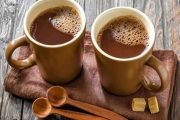
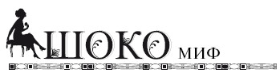
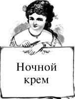
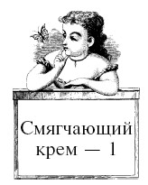
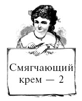
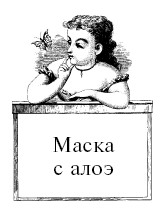
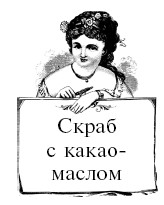
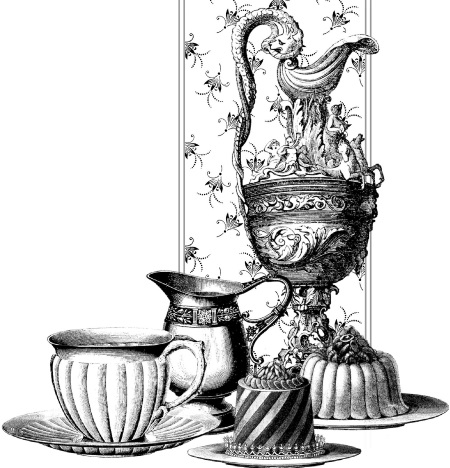

Шоколадные муссы, скрабы, крема, бальзамы и лосьоны .

Современная промышленность выпускает множество средств для ухода за кожей. Косметический крем представляет собой ароматизированное кремообразное, мазеобразное или жидкое вещество, основное предназначение которого увлажнять, смягчать, питать и защищать кожу человека. Крема бывают жировые, безжировые и эмульсионные. Эмульсионные кремы подразделяются на жидкие – масло в воде, и густые – вода в масле, и, как можно видеть, состоят из двух главных компонентов: масла и воды. По своей консистенции крема разделяются на жидкие, гели и желе. Разного рода молочко и сливки относятся соответственно к жидким кремам. Косметические средства, в состав которых входит газ, делятся на аэрозоли и пены (муссы). Аэрозоли состоят из жидкости, распыленной в воздухе, в то время как пены и муссы содержат газ, распределенный в жидкости.
В 1875 году Даниэль Петер из Швейцарии обнаружил способ перемешивания сгущенного молока с шоколадом, использованный его другом Генри Нестле. Так появился первый молочный шоколад.

Конечно, главная задача любого косметического средства – придача привлекательного вида коже человека. Стоит отметить, что средство, чье воздействие оказывается более глубоко и достигает подкожных тканей, следует отнести к разряду лечебных, и за его использованием должен следить врач-косметолог.
В принципе универсального крема быть не может – каждое косметическое средство отличается составом и консистенцией, и его применение обусловлено особенностями кожи, полом, возрастом и состоянием здоровья пользователя. Обычно потребителям предлагается серия косметических средств, каждое из которых выполняет свою задачу. В состав таких серий входят: очищающее средство (в том числе пилинг или скраб), питательный крем, средство интенсивного ухода за кожей, тоник и защитный крем.
Кремы для женщин подразделяются по типу их кожи: для сухой, нормальной, жирной, проблемной. Причем проблемная кожа может быть суперсухой, супержирной, чувствительной и склонной к образованию угрей. Для мужчин предлагаются средства для бритья и после бритья, которые также подразделяются по типу кожи: для сухой, жирной и нормальной. Основная задача этих средств – обеспечить комфортное бритье и успокоить кожу после завершения процедуры. Вот почему в состав кремов после бритья добавляют лекарственные травы, способствующие заживлению ран, витамины F и K, успокаивающие кожу.
Очистка кожного покрова и удаление омертвевших клеток с поверхности эпидермиса производится пилинг-кремом и скраб-кремом. В чем разница? Пилинг-крем при помощи химических составляющих растворяет мертвые клетки поверхности кожи, скрабы действуют механически – в их состав входят отшелушивающие тонкоизмельченные твердые частицы: диатомит, полимеры или скорлупа орехов и семечек.
Конечно, косметические средства учитывают и возраст пользователя. Крема для детей в своем составе могут содержать только натуральные гипоаллергенные компоненты. Для подростков предлагается крем с повышенным содержанием компонентов, препятствующих возникновению угрей и воспалительных процессов. Для более старших возрастных групп населения косметическая продукция больше внимания уделяет усилению питания кожи, борьбе с морщинами и изменениями.
Больше всего в мире любят шоколад в Швейцарии. Жители этой страны съедают в среднем более десяти килограммов шоколада в год!

Шоколадная косметика включает в себя все указанные выше формы продукции – крема, скрабы, пиллинги, муссы и так далее. Как же работает эти препараты?
Для ухода за кожей лица используют очищающее крем-молочко, в состав которого в числе активных компонентов входят какао-масло и какао-порошок. Как дополнение многие производители включают в состав молочка экстракты лекарственных трав, например ромашки. Очищающее крем-молочко идеально подходит для удаления макияжа и очищения кожи лица и шеи. С похожей функцией выпускается крем-бальзам.
При более глубокой очистке кожи лица нужно использовать шоколадный крем-пилинг, в состав которого входит какао-масло и шоколад. Для очищения в таких кремах используют мелкомолотые включения из семян, орехов, ракушек или минералов, способствующие удалению мертвых клеток рогового слоя кожи. Какао-масло в данном случае усиливает тонус кровеносных сосудов и хорошо увлажняет верхние слои кожи. Крем-пилинг для тела имеет схожий состав и аналогичное воздействие на кожу. Многие производители дополнительно включают в состав кремов лекарственные растения, масла и натуральные ароматизаторы, что способствует усилению их оздоровительного действия. Например, скраб из какао-порошка с добавлением сметаны или сливок не только глубоко очистит вашу кожу, но и произведет оздоровительный эффект. Включения в состав очищающего шоколадного крема пчелиного меда делает продукт хорошим антисептиком.
На завершающей стадии обработки кожи используют крем-бальзам, в состав которого входят какао-масло, какао тертое и экстракты какао-бобов. Такой крем важен для активного питания и увлажения кожи, а полезные свойства какао способствуют повышению упругости и эластичности кожных покровов. В зависимости от типа кожи и особенностей организма стоит подбирать крем-бальзам с разным содержанием какао – от светлого к темному – и различными дополнительными ингредиентами.
Шоколадный крем поможет вам в борьбе с морщинами, особенно для сухой и чувствительной возрастной кожи, благодаря дополнительным компонентам, таким как масла, витамины и увлажнители (аллантоин или депантенол). Такой крем способствует поступлению воды к клеткам кожи, защищает их от потери влаги, чем питает кожу и защищает ее от лишних морщин. Яичный желток и сметана, включенные в состав крема для омолаживающей и подтягивающей крем-маски, прекрасно подходят для стареющей кожи, особенно если сочетаются с витаминами А и Е. Для нормальной кожи рекомендуется использовать крем-маску с йогуртом или молоком вместо сметаны.
Что касается дополнительных включений в состав того или иного шоколадного косметического продукта, то каждый из них имеет массу достоинств. Молочные продукты богаты низкомолекулярными белками и важными для роста клеток аминокислотами. Они участвуют в регенерации и омоложении вашей кожи, успешно регулируют процессы роста и обновления клеток. Молочные продукты, такие как сыворотка, натуральный йогурт, сметана, сливки, и само молоко обладают превосходными регенерирующими и питательными свойствами, что делает их важной составляющей шоколадной косметики. Многие молочные продукты обладают и антиоксидантными свойствами, проявляющимися в борьбе со старением кожи.
В 1842 году английская шоколадная фабрика Cadbury выпустила первую в мире шоколадную плитку.

Включение растительного глицерина и таких веществ, как яичный лецитин, пектин и воск, в качестве натуральных важных компонентов косметических кремов позволяет обеспечивать глубокое увлажнение и смягчение кожи.
Ту же роль играют и масла вечнозеленого кустарника жожоба, клещевины (касторовое) и хлопковых семян, обладающих смягчающими, увлажняющими и защитными свойствами. То же касторовое масло часто выступает в качестве основы для бальзамов и применяется как средство укрепления волос. С той же задачей успешно справляется и репейное масло – древнее средство борьбы с проблемами кожи головы. Продолжая разговор о маслах, выделим масло дерева ши и кокоса – важные средства для ухода за кожей. Эти масла хорошо увлажняют и питают кожу, делая ее более гладкой и светлой.
Для сухой и чувствительной кожи рук подходят крахмал и молотый овес, которые смягчают ее, защищают от шелушения, зуда и покраснения. Крахмал хорошо сочетается со зрелой кожей, разглаживает мелкие морщинки и снимает усталость.
Важной составляющей шоколадной косметики остаются включения из лекарственных трав. Растения содержат множество незаменимых микроэлементов, витаминов, фитонцидов и других полезных веществ. В состав косметических средств их вводят в виде отваров, вытяжек и настоек, а также используют сок растений. Для ухода за сухой и чувствительной кожей рук, склонной к шелушениям и покраснениям, используют корень лопуха, семена льна, экстракт листьев алоэ-веры, корень солодки, листья череды, эхинацею и некоторые другие лекарственные растения, которые смягчают и интенсивно увлажняют кожу, устраняют ее раздражение и покраснение.
Хорошей антиоксидантной защитой обладают плоды шиповника, всем известные крапива и шалфей, экстракты коры березы и настойка травы мать-и-мачехи, цедра лимона, сок клюквы и корень солодки. Эти природные борцы с окислительными процессами в клетках кожи стоят на страже ее эластичности: питают, тонизируют и разглаживают мелкие морщинки.
Сильнейшими регенерирующими, ранозаживляющими, восстанавливающими и антисептическими свойствами обладают цветы ромашки и календулы, листья брусники, водные экстракты прополиса и корня женьшеня. Эти включения в шоколадную косметику участвуют в синтезе коллагена и эластина в клетках кожи человека.
Большой популярностью пользуются минеральные соли Мертвого моря, эффективно смягчающие и разглаживающие кожу рук. Комплекс солей хорошо укрепляет ногтевую пластину, предотвращает появление микротрещин. Включенные в состав шоколадной косметики, соли Мертвого моря улучшают обмен веществ в кожном покрове, укрепляют соединительную ткань и усиливают эластичность кожи и, что очень важно, эффективно выводят токсины и продукты загрязнения.
Практически все какао-деревья растут в пределах 20 градусов от экватора, причем 75 % находятся на расстоянии в 8 градусов по обе стороны экватора. Главные места возделывания какао-культур: Южная и Центральная Америка, Западная Африка и Юго-Восточная Азия/Океания.

Включают в шоколадную косметику и омыленные фракции пальмового, кокосового и оливкового масел (сорбитол кокоат натрия), очищающие и размягчающие кожу рук компоненты. Активным увлажнением в составе шоколадной косметики занимаются следующие натуральные компоненты: гилауроновая кислота, Д-пантенол, пентавитин и бисаболол. Для борьбы с грибковыми инфекциями и воспалительными процессами в состав кремов и других косметических средств включают тетраборат натрия и азелаиновую кислоту. Они оказывают эффективное бактерицидное воздействие на кожу. Тем же обладает и концентрат коллоидного серебра – природный консервант. Его ионы препятствуют размножению болезнетворных бактерий, вирусов, грибков и уничтожают чужеродную микрофлору. Коллоидное серебро ускоряет процессы заживления любых повреждений кожи и сохраняет свое антибактериальное действие на кожный покров довольно длительное время.
Что касается оздоровления ногтей и укрепления ногтевой пластины, то мы уже упоминали в этой связи соли Мертвого моря. Кроме этого природного комплекса с проблемой хорошо справляются экстракты цветов календулы, плодов облепихи и, конечно, витамины Е, А и йод. Включенные в состав шоколадной косметики, эти составляющие выполняют важную функцию. К этому списку мы забыли добавить лимон, чей сок и цедра успешно оздоравливают ногтевую пластину, восстанавливают ее цвет и структуру.
Уникальными и незаменимыми в оздоровительной косметике природными продуктами остаются мед, прополис и маточное молочко, обладающие превосходными антисептическими, регенерирующими и защитными свойствами. Включение этих продуктов в шоколадную косметику важно со всех сторон, так как мед и продукты жизнедеятельности пчел обладают широчайшим спектром оздоровительного действия.
В состав косметики включают такой интересный продукт, как экстракт жемчужного порошка. Это продукт переработки озерного или речного жемчуга, содержащий большое число важных элементов: карбоната магния, фосфата кальция, окиси железа, кремния, алюминия, железа, магния, натрия, цинка, серы и стронция. В составе жемчуга есть аминокислоты, способствующие быстрой регенерации эпидермиса. Жемчужный порошок прекрасно снимает зуд и воспалительные процессы в коже, защищает ее от воздействия УФ-лучей, обладает отбеливающим действием. Препарат подавляет процесс образования меланина.
Таков общий список добавок, улучшающих шоколадную косметику.
Существует множество рецептов оздоровительных шоколадных бальзамов для волос, стимулирующих их рост и придающих прекрасный внешний вид. Для изготовления шоколадных бальзамов используют какао в порошке или плиточный шоколад с разным содержанием какао. Одни выберут горький шоколад, другие – белый. Для сухих волос прекрасно подходит яично-шоколадный бальзам, в состав которого, кроме шоколада с содержанием какао не менее 50 %, входят яичный желток, оливковое или пихтовое масло. Вопрос выбора растительного масла каждый производитель решает сам, ведь любое из выбранных масел обладает теми или иными положительными свойствами. Зачастую в состав шоколадного бальзама для волос включают другие полезные добавки, такие как соли, эссенции лекарственных трав и витамины. Бальзам наносится на кожу головы и волосы, причем полезно немного помассировать голову. Далее накладывается полиэтилен, создающий необходимый парниковый эффект и усиливающий взаимодействие кожи и питательных веществ бальзама, и голова покрывается полотенцем. Время проведения процедуры составляет от 10 минут до двух часов и зависит от состава шоколадного бальзама, состояния волос и иных факторов, учитывать которые необходимо косметологу при проведении этой процедуры.

Есть распространенное мнение, что шоколад часто вызывает аллергию. Это очередной миф. Японские ученые применяют шоколад в лечении аллергии у детей, доказывая тем самым обратное. Аллергия на сам шоколад – очень редкое явление, чаще бывает аллергия на различные добавки к шоколаду (эссенции, наполнители, ароматизаторы, консерванты и т. д.).
Некоторые производители бальзамов для волос в качестве добавки используют растертые фрукты и ягоды, в состав которых входят важные витамины и минералы. Отличными добавками остаются молоко, сливки, йогурт и мед, прекрасный оздоровительный эффект которых проверен временем.
Интересно, что чистое какао-масло (основной ингредиент шоколада) само прекрасно действует на кожу, превосходя своим полезным воздействием многие косметологические средства. Кожа получает хорошее питание, становится упругой и гладкой, а морщины исчезают прямо у вас на глазах. Но какао-масло воздействует не только на роговой слой, но и проникает глубоко в кожу, питая даже подкожные ткани. А употребление какао-масла внутрь способствует улучшению сосудистой системы организма и является мощным антиоксидантом. Какао-масло одно из немногих натуральных средств хорошо справляется с проблемами кожи вокруг глаз и губ, укрепляя ресницы и брови. Покрытая таким маслом кожа лица не обветривается в зимнее время, а большое число микроэлементов в масле работают в это время над восстановлением поврежденных клеток.
Забегая вперед, а рецепты домашней шоколадной косметики ждут вас в следующей главе, предложим несколько неплохих кремов, в составе которых присутствует какао-масло.
Для сухой и чувствительной кожи лица попробуйте довольно простой ночной крем.

Столовую ложку твердого масла какао поместите в емкость и растопите его на водяной бане. Когда какао-масло растает, не снимая его с бани, добавьте 1 чайную ложку масла жожоба и 3 столовых ложки оливкового масла. Если у вас есть облепиховое или кунжутное, можете использовать их. Тщательно все перемешайте до получения однородной массы и охладите ее. Важно продолжать перемешивать крем весь период охлаждения. Не помешает в это время добавить пару капель сандалового масла, являющегося хорошим антисептиком, снимающим с кожи раздражение и воспаление. Остывший крем переложите в заранее приготовленную емкость и пользуйтесь в свое удовольствие. Крем с какао-маслом можно без проблем использовать даже для кожи вокруг глаз и для губ.
Для сухой и возрастной кожи предлагаем рецепт питательного и смягчающего крема.

В небольшую емкость положите 1 столовую ложку какао-масла, 1 чайную ложку ланолина, 1 чайную ложку косметического парафина и 2 чайные ложки вазелина. Поставьте емкость на слабый огонь и, помешивая, растопите все ингредиенты крема. В образовавшуюся жидкую массу добавьте 3 столовые ложки предварительно подогретой розовой воды, снимите емкость с огня и, постоянно помешивая, дайте крему полностью остыть. Затем переложите его в заранее приготовленную баночку, и питательный крем готов к использованию.

Как и в предыдущем рецепте, растопите какао-масло, ланолин, парафин и вазелин. В жидкую смесь, снятую с огня, добавьте 1 чайную ложку масла шиповника и 1 чайную ложку масла облепихи. Добавьте к смеси по 2 капли витамина А и витамина Е. Дальнейшие действия те же, что и в предыдущем рецепте. В итоге вы получите замечательный крем с эффектом ранозаживления и омоложения кожи. Он прекрасно подойдет не только для кожи лица, но и для шеи и области декольте. Остатки этого крема, которые вы уже не хотите использовать для увлажнения кожи лица, вы можете применять для ухода за кожей ног – шиповник и облепиха благоприятно воздействуют на ороговевшие участки.
Для комбинированной кожи подойдет оздоровительная маска с алоэ, известного лекарственного растения. Эта маска насытит вашу кожу витаминами и хорошо увлажнит ее.

В водяной бане растопите 1 чайную ложку какао-масла, затем добавьте к нему 1 столовую ложку масла из виноградных косточек. Все тщательно перемешайте, смесь снимите с бани и добавьте в нее измельченную мякоть листьев алоэ.
Еще раз перемешайте и дайте немного остыть. Теплую массу наложите на лицо и оставьте на 20 минут. По завершении процедуры снимите ватными тампонами остатки маски и сполосните лицо сначала теплой, а затем водой комнатной температуры.
Для очищения кожи идеально подойдет скраб с какао-маслом. Это косметическое средство подходит для всех типов кожи, кроме супержирной и проблемной.

В состав скраба входят: какао-масло, сырые орехи, мед и овсяные хлопья. Орехи нужно ж PI предварительно измельчить в кофемолке до крупной фракции. В небольшую емкость положите 2 столовые ложки какао-масла и поместите ее на водяную баню. Вместо бани вы смело можете всегда использовать микроволновую печь. В растопленное какао добавьте 1 столовую ложку меда и хорошо перемешайте его с какао. После снятия с бани добавьте в смесь 1 столовую ложку овсяных хлопьев и 1 столовую ложку орехов и все тщательно перемешайте до образования однородной массы. После полного остывания скраб готов. После его применения кожа станет более гладкой и бархатистой.
